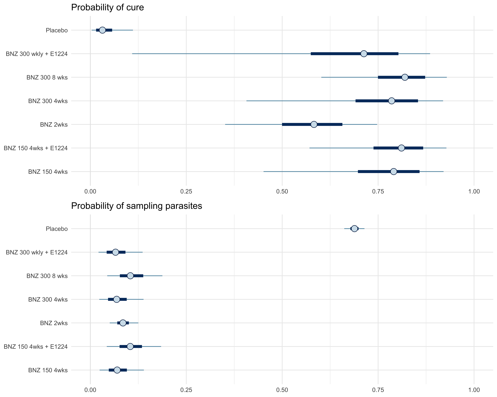
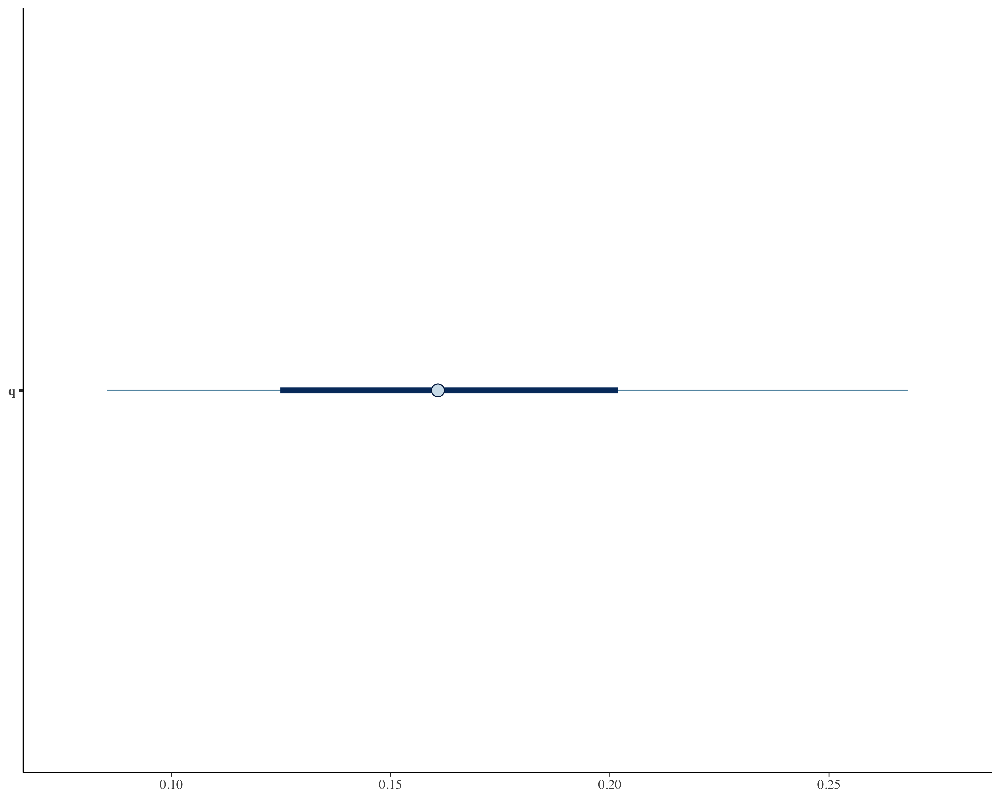

── Attaching core tidyverse packages ──────────────────────── tidyverse 2.0.0 ──
✔ dplyr 1.1.4 ✔ readr 2.1.5
✔ forcats 1.0.0 ✔ stringr 1.5.1
✔ ggplot2 3.4.4 ✔ tibble 3.2.1
✔ lubridate 1.9.3 ✔ tidyr 1.3.1
✔ purrr 1.0.2
── Conflicts ────────────────────────────────────────── tidyverse_conflicts() ──
✖ dplyr::filter() masks stats::filter()
✖ dplyr::lag() masks stats::lag()
ℹ Use the conflicted package (<http://conflicted.r-lib.org/>) to force all conflicts to become errors
library(cmdstanr)
This is cmdstanr version 0.7.1
- CmdStanR documentation and vignettes: mc-stan.org/cmdstanr
- CmdStan path: /Users/jwatowatson/.cmdstan/cmdstan-2.34.1
- CmdStan version: 2.34.1
library(posterior)
This is posterior version 1.5.0
Attaching package: 'posterior'
The following objects are masked from 'package:stats':
mad, sd, var
The following objects are masked from 'package:base':
%in%, match
library(bayesplot)
This is bayesplot version 1.11.0
- Online documentation and vignettes at mc-stan.org/bayesplot
- bayesplot theme set to bayesplot::theme_default()
* Does _not_ affect other ggplot2 plots
* See ?bayesplot_theme_set for details on theme setting
Attaching package: 'bayesplot'
The following object is masked from 'package:posterior':
rhat
library(gridExtra)
Attaching package: 'gridExtra'
The following object is masked from 'package:dplyr':
combine
library(survival)library(survminer)
Loading required package: ggpubr
Attaching package: 'survminer'
The following object is masked from 'package:survival':
myeloma
library(expint)# probability that the max of k independent poisson draws is zero is given by the incomplete# gamma functionmy_lambdas =seq(from=log10(1/5000), to=log10(5000/5000),length.out=100)par(las=1, cex.lab=1.3, cex.axis=1.3)# 15 independent drawsplot(my_lambdas, 1-expint::gammainc(1,5*(10^my_lambdas))^15,type='l', panel.first=grid(), xaxt='n', xlab='Parasite density per ml',ylab='Probability at least one draw has at least 1 parasite',lwd=3, col='darkred')vals =c(0.0002, 0.001, 0.01, .1, 1, 10)axis(1, at =log10(vals),labels = vals)abline(h=0.5,lty=2)# 5 independent drawslines(my_lambdas, 1-expint::gammainc(1,5*(10^my_lambdas))^5,lty=2,lwd=3,col='darkblue')# single drawlines(my_lambdas, 1-expint::gammainc(1,5*(10^my_lambdas)),lty=3,lwd=2)
Scale for y is already present.
Adding another scale for y, which will replace the existing scale.
Scale for x is already present.
Adding another scale for x, which will replace the existing scale.
Scale for y is already present.
Adding another scale for y, which will replace the existing scale.
Scale for x is already present.
Adding another scale for x, which will replace the existing scale.
grid.arrange(gg_cure, gg_sample,nrow=2)

mcmc_intervals(fit_ben$draws(c("q")))

draws <- fit_ben$draws(format ="matrix")mean(draws[,'p_1[3]'] < draws[,'p_1[5]'])
gg1=mcmc_intervals(fit_all$draws(c("p_1")))+ ggplot2::scale_y_discrete(labels =c("p_1[13]"="Placebo","p_1[3]"="BNZ 2wks","p_1[1]"="BNZ 150 4wks","p_1[4]"="BNZ 300 4wks","p_1[2]"="BNZ 150 4wks + E1224","p_1[6]"="BNZ 300 wkly + E1224","p_1[5]"="BNZ 300 8 wks","p_1[7]"="E1224 LD 8W","p_1[8]"="E1224 HD 4W","p_1[9]"="E1224 HD 8W","p_1[10]"="FEX 3d","p_1[11]"="FEX 10d","p_1[12]"="FEX 7d"))+ggtitle('Probability of cure')+xlim(0,1)+theme_minimal()
Scale for y is already present.
Adding another scale for y, which will replace the existing scale.
Scale for x is already present.
Adding another scale for x, which will replace the existing scale.
Scale for y is already present.
Adding another scale for y, which will replace the existing scale.
Scale for x is already present.
Adding another scale for x, which will replace the existing scale.